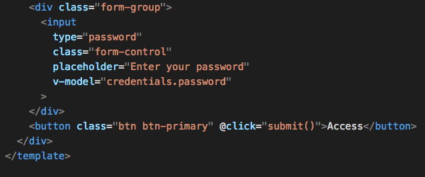
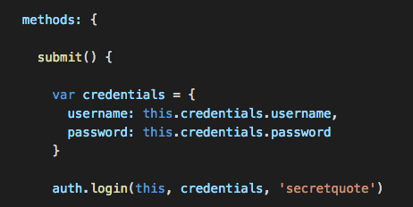
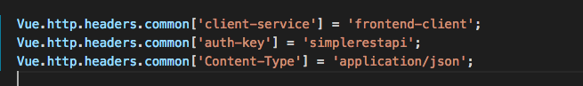
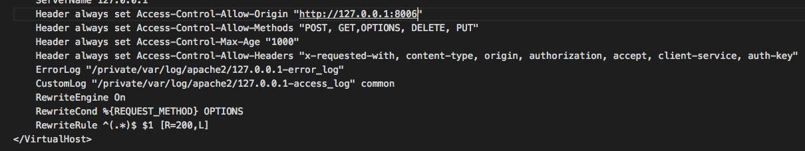
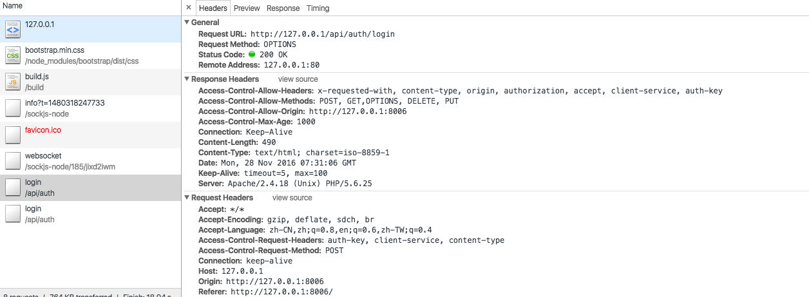
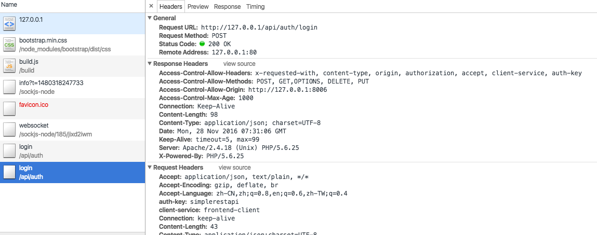
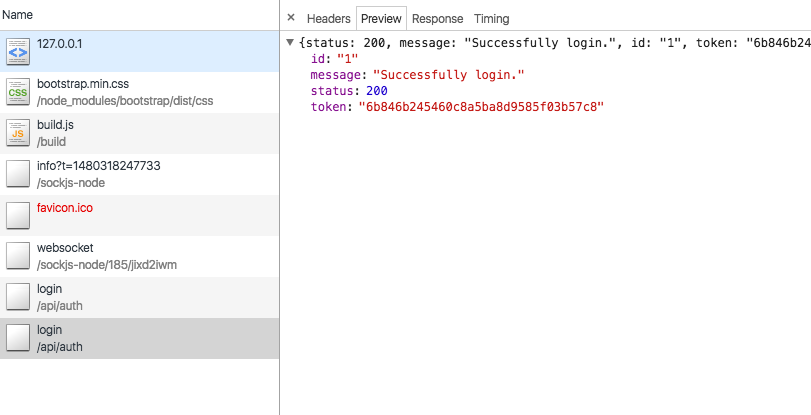

前言
cors
最近在学习vue，想来实践个简单的前后端分离demo，前端取到后端发给其的唯一token可以使前端用户访问后端各种各样的接口
开始
框架
前端采用vue，node生成一个web server,后端采用ci作为api接口，apache作为后端代理服务器
vue配置
前端的提交的数据跟mvc时代（表单提交）有了些区别，vue使用v-model的双向绑定使数据提交到v-on:click(@click)指定submit方法上，submit在调用指定模块下已写好的提交方式（mvc时代是直接提交到controller下所写的方法，mv*时代是js写好一个方法来获取数据，在提交给已写好模块的提交方式）


在vue入口文件引入vue-resource包，添加自定义头，后端获取这些自定义头来限制访问

apache配置

其中8006端口资源是node生成的web server，我们只允许其访问后端api。RewriteCond是因为当发起跨域请求时浏览器发的一个预请求(pre-flight)，我们需要代理服务器处理一下，回复状态码200。
请求过程

预请求


引用
vue-jwt-authentication
后记
大前端感觉真的是解决各种包、模块的问题，服务器端js(node)对session的管理就感觉各种坑。。